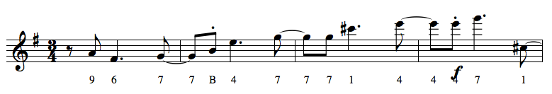

Overview: Post-Tonal Tools¶
The music21 toolkit features many tools for analyzing and creating music within
a post-tonal context. A Chord can be identified as a
Forte class, a list of pitch classes can be used to create a 12-tone matrix,
and many other analytical tools are available.
This overview will illustrate key features of music21’s post tonal tools. For
complete documentation on post-tonal tools, see the many methods in
Chord as well as the objects in music21.serial,
such as TwelveToneMatrix,
TwelveToneRow, and the many twelve tone rows defined
in vienneseRows.
Pitches as Pitch Classes¶
Any music21 Pitch, or a Note
containing Pitch, can be expressed as pitch class integers using the
pitchClass and
pitchClassString properties.
In the following example, the parse() function is
used to create a Score object. The
id attribute of each contained
Part is presented in a list.
>>> from music21 import corpus
>>> aScore = corpus.parse('beethoven/opus59no2', 3)
>>> [e.id for e in aScore.parts]
['Violin I.', 'Violin II.', 'Viola.', 'Violoncello.']
We can view the fourth and fifth measures of the violin Part by obtaining the
Part from the Stream with getElementById() method.
Next, we can extract the desired measures with the
measures() method. Calling the
show() method will, assuming correct setup of your
environment, open a display of the extracted measures.
>>> vlnPart = aScore.getElementById('Violin I.')
>>> mRange = vlnPart.measures(4,7)
>>> mRange.show()
{kind=link}
If we want to gather all Pitch objects from this
measure range, we can use the pitches property.
This returns a list of all Pitch objects. All pitch objects have
pitchClass and
pitchClassStr properties, providing either integer
or string representations, respectively.
>>> [str(p) for p in mRange.pitches]
['A4', 'F#4', 'G4', 'G4', 'B4', 'E5', 'G5', 'G5', 'G5', 'C#6', 'E6', 'E6', 'E6', 'G6', 'C#5']
>>> [p.pitchClass for p in mRange.pitches]
[9, 6, 7, 7, 11, 4, 7, 7, 7, 1, 4, 4, 4, 7, 1]
If we want to label the notes in our measure range with the Note’s pitch class representation, we can iterate over the notes and assign the pitch class representation to the Note’s lyric. This is a common way to annotate Note and Chord objects in music21. The results can be displayed with the show() method.
>>> for n in mRange.flat.notes:
... n.lyric = n.pitchClassString
>>> mRange.show()
Here is the image from when we were using a Beethoven Quartet as an example
{kind=link}
Chords as Forte Set Classes¶
Any music21 Chord can be interpreted as a Forte set class. Additional, a wide variety of analytical features, derived from the Forte set class, are available as methods of the chord.
For an example, lets create a sequence of generated aggregate-completing trichords stored on a Stream. That is, we will construct chords with pitch classes, drawing them from a list of all pitch classes. These pitches will be supplied to a Chord object and stored on a Stream.
>>> from music21 import stream, chord
>>> aStream = stream.Stream()
>>> src = list(range(12)) # cheate a list of integers 0 through 11
>>> src = src[2:4] + src[0:2] + src[8:9] + src[4:8] + src[9:12] # recombine
>>> for i in range(0,12,3):
... aStream.append(chord.Chord(src[i:i+3]))
...
>>> aStream.show()
{kind=link}
These Chords, like all Chords in music21, can be interpreted as Forte set classes. The Chord object offers numerous methods that retrieve data from the set class representation of the Chord. The following is just a sampling of some of the many relevant methods.
>>> for c in aStream: print(c.orderedPitchClassesString)
...
<023>
<148>
<567>
<9AB>
>>> for c in aStream: print(c.forteClass)
...
3-2B
3-11A
3-1
3-1
>>> for c in aStream: print(c.forteClassTnI)
...
3-2
3-11
3-1
3-1
>>> for c in aStream: print(c.normalForm)
...
[0, 2, 3]
[0, 3, 7]
[0, 1, 2]
[0, 1, 2]
>>> for c in aStream: print(c.primeFormString)
...
<013>
<037>
<012>
<012>
>>> for c in aStream: print(c.intervalVector)
...
[1, 1, 1, 0, 0, 0]
[0, 0, 1, 1, 1, 0]
[2, 1, 0, 0, 0, 0]
[2, 1, 0, 0, 0, 0]
To annotate the Chords stored on the Stream with their Forte name, we can iterate over the Stream and assign the Forte name to each Chord’s lyric attribute.
>>> for c in aStream:
... c.lyric = c.forteClass
...
>>> aStream.show()
{kind=link}
Creating and Processing Twelve-Tone Matrices¶
The music21 music21.serial module provides a Stream-based representation of a 12-Tone row, as well as the ability to view these rows as a matrix. Additionally, numerous 12-tone rows from works are available as classes.
For example, we can create an instance of the row from Alban Berg’s Violin
Concerto, use the show() method to display its contents as text, and then
create and print a TwelveToneMatrix object.
>>> from music21 import *
>>> aRow = serial.getHistoricalRowByName('RowBergViolinConcerto')
>>> aRow.show('text')
{0.0} <music21.note.Note G>
{1.0} <music21.note.Note B->
{2.0} <music21.note.Note D>
{3.0} <music21.note.Note F#>
{4.0} <music21.note.Note A>
{5.0} <music21.note.Note C>
{6.0} <music21.note.Note E>
{7.0} <music21.note.Note G#>
{8.0} <music21.note.Note B>
{9.0} <music21.note.Note C#>
{10.0} <music21.note.Note E->
{11.0} <music21.note.Note F>
>>> aMatrix = aRow.matrix()
>>> print(aMatrix)
0 3 7 B 2 5 9 1 4 6 8 A
9 0 4 8 B 2 6 A 1 3 5 7
5 8 0 4 7 A 2 6 9 B 1 3
1 4 8 0 3 6 A 2 5 7 9 B
A 1 5 9 0 3 7 B 2 4 6 8
7 A 2 6 9 0 4 8 B 1 3 5
3 6 A 2 5 8 0 4 7 9 B 1
B 2 6 A 1 4 8 0 3 5 7 9
8 B 3 7 A 1 5 9 0 2 4 6
6 9 1 5 8 B 3 7 A 0 2 4
4 7 B 3 6 9 1 5 8 A 0 2
2 5 9 1 4 7 B 3 6 8 A 0
We might divide this row into trichords, present each of those trichords as
Chords, and label the resulting pitch classes and Forte set class. As shown
above, we can set the lyric attribute to assign a single line of text. If we
need to assign multiple lines of text, the Note and Chord method
addLyric() can be used to add successive lines.
>>> bStream = stream.Stream()
>>> for i in range(0,12,3):
... c = chord.Chord(aRow[i:i+3])
... c.addLyric(c.primeFormString)
... c.addLyric(c.forteClass)
... bStream.append(c)
>>> bStream.show()
{kind=link}